UXPRESSO — 누구나 쉽게, 혼자서도 자신 있게
터치와 음성을 하나의 주문 흐름에서
팀 UXPRESSO · 2026.11
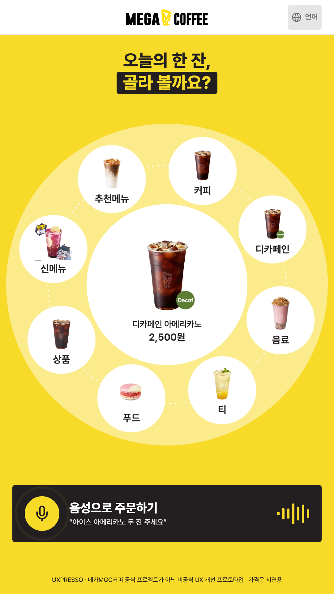
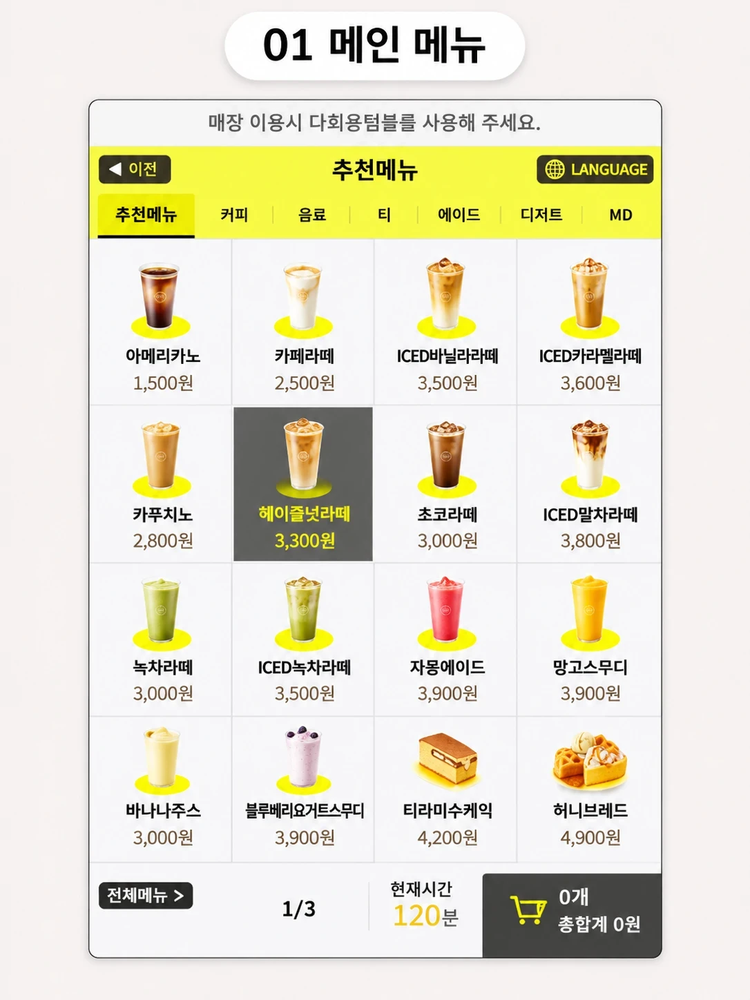
4열 격자에 이름과 가격이 작게 놓입니다. 헤더의 7개 분류를 먼저 이해해야 합니다.
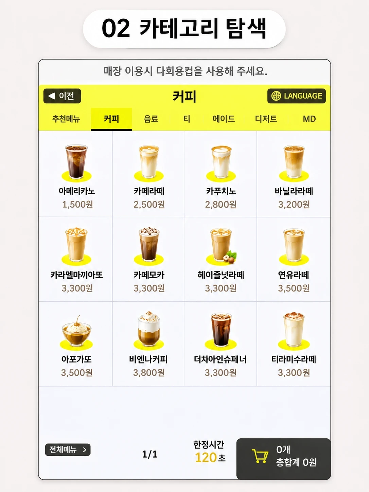
컵 모양과 크기가 같아, 이름을 하나씩 읽어야 구분됩니다. 하단에는 시간 “120”이 계속 보입니다.
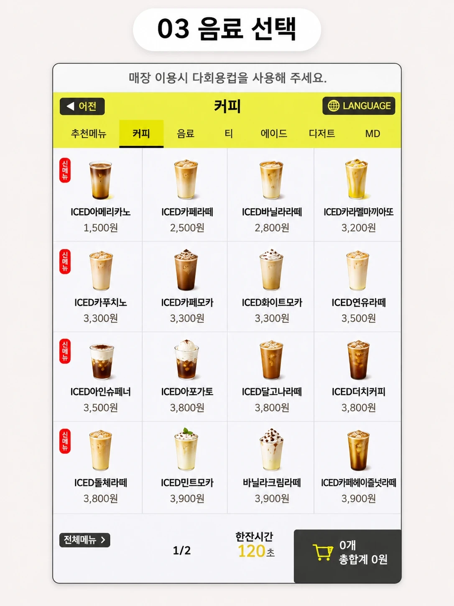
“ICED”가 붙은 메뉴를 따로 나열해 목록이 길어지고, 이름 앞부분이 반복됩니다.
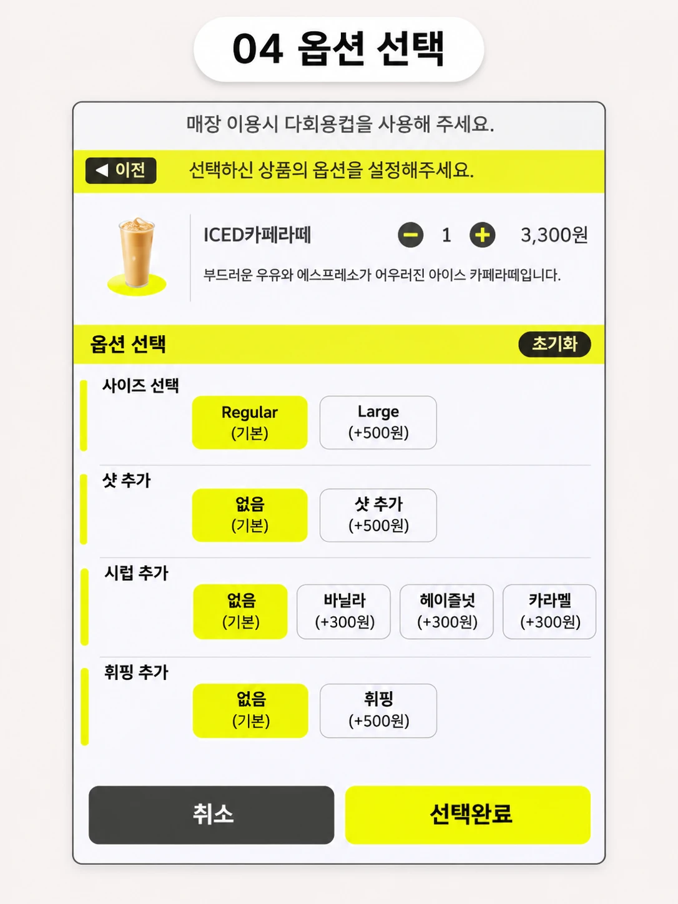
사이즈·샷·시럽·휘핑이 같은 위계입니다. 선택된 값과 완료 버튼이 같은 노란색입니다.
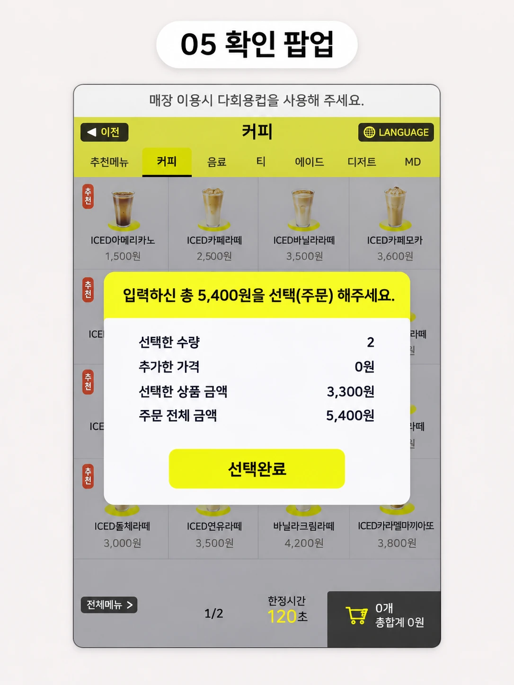
“선택(주문) 해주세요” 문구와 네 가지 금액이 함께 나오고, 되돌아가는 버튼이 보이지 않습니다.
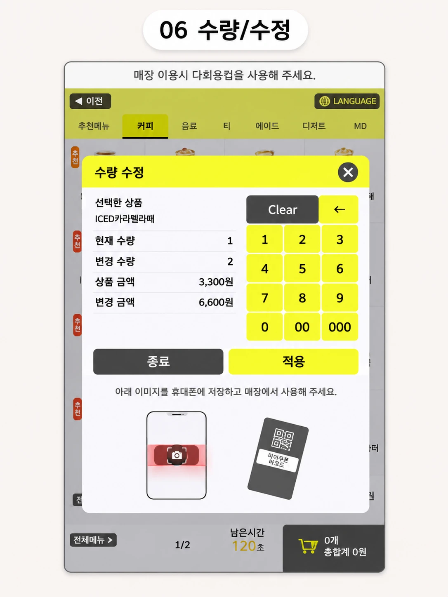
“00·000·Clear” 키까지 있는 별도 팝업에서 수량을 입력해야 합니다.
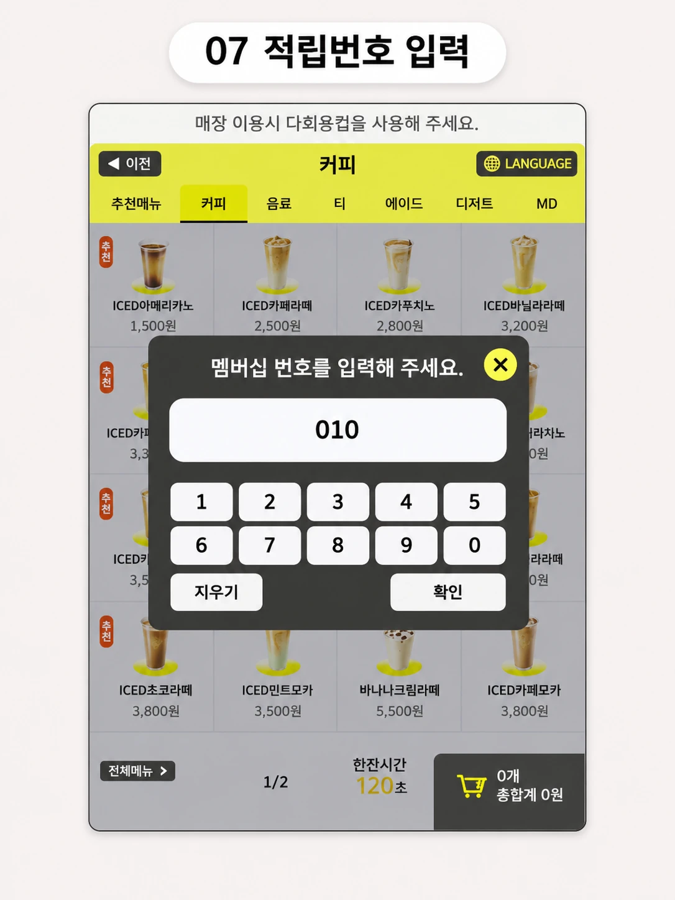
주문 내용이 가려진 채 번호를 입력해, 지금 어느 단계인지 알기 어렵습니다.
| 구분 | 문제 가설 | 고객이 겪는 상황 |
|---|---|---|
| P01 | 메뉴 탐색 | 분류 기준을 알아야 원하는 메뉴를 찾을 수 있다 |
| P02 | 선택의 복잡성 | 옵션과 버튼이 비슷하게 보여 무엇을 해야 할지 헷갈린다 |
| P03 | 조작 부담 | 작은 항목을 고르고 팝업과 키패드를 오가기 어렵다 |
| P04 | 시간 압박 | 남은 시간 표시 때문에 충분히 읽고 고민하지 못한다 |
| P05 | 오류 복구 | 실수·결제 실패 때 주문을 유지한 채 되돌리기 어렵다 |
How Might We
디지털 기기가 어려운 고객 (고령층을 주요 고려 대상으로 하되, 나이만으로 판단하지 않음)
빠르게 주문하려는 고객, 작은 글자·터치가 어려운 고객
아직 검증하지 않은 가설입니다. 각 가설은 사용성 테스트에서 확인할 지표와 함께 정했습니다.
| 만약 …하면 | …할 것이다 | 확인 지표 | |
|---|---|---|---|
| H1 | 원하는 것을 말하면 해당 화면이 바로 열리게 하면 | 분류 체계를 몰라도 메뉴를 찾을 수 있다 | 음성 의도 인식 성공률, 올바른 화면 연결 비율 |
| H2 | 인식 결과를 화면에 보여 주고 직접 확인하게 하면 | 음성 주문의 실수 걱정이 줄고 스스로 고칠 수 있다 | 인식 실패 복구율, 음성↔터치 전환 성공률 |
| H3 | 온도·옵션·총액을 한 화면에서 고르게 하면 | 옵션 선택 오류가 줄어든다 | 상품·옵션 선택 오류 횟수, 주문 정확도 |
| H4 | 카운트다운 대신 안내와 시간 연장을 제공하면 | 시간 압박이 줄고 충분히 읽고 고를 수 있다 | 시간 연장 성공률, 의도치 않은 초기화 횟수 |
독립 주문 완료율 = 도움 없이 정확히 주문한 참여자 ÷ 전체 시도 참여자. 음성 기능과 화면 도움말 이용은 “혼자 주문”에 포함합니다. 소요 시간은 보조 지표입니다.
“아이스 아메리카노 두 잔 주세요”처럼 원하는 것을 말합니다.
들은 말, 해석한 메뉴, 다음 행동을 글자로 보여 줍니다.
담기·주문 확인·할인·결제는 고객이 직접 누릅니다.
챗봇 화면을 만들지 않고, 미리 정한 의도만 기존 화면으로 연결합니다.
터치만으로 처음부터 끝까지 주문할 수 있고, 언제든 바꿔 쓸 수 있습니다.
노란색, 로고, 8개 카테고리, 상품 이미지, 제휴·결제 브랜드를 유지합니다.
카운트다운·대기 인원 표시 대신 안내와 시간 연장을 제공합니다.
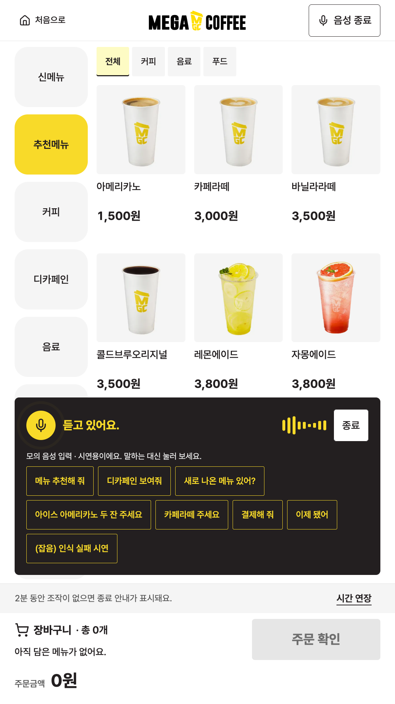
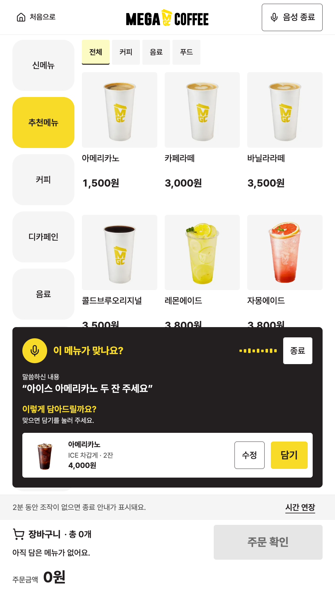
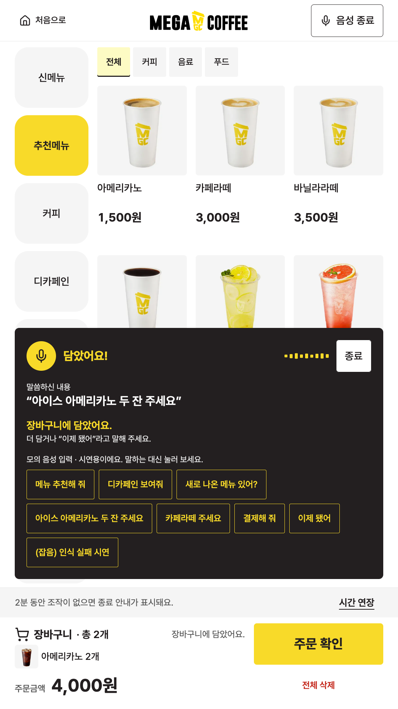
| 말하면 | 화면 반응 |
|---|---|
| “메뉴 추천해 줘” | 추천메뉴 열기 |
| “디카페인 보여줘” | 디카페인 열기 |
| “아이스 아메리카노 두 잔” | 메뉴·온도·수량 확인 후 담기 |
| “카페라떼 주세요” | 따뜻/차갑게 되묻기 |
| “결제해 줘” | 직접 선택하도록 안내 |
| 인식 실패 | 다시 말하기 / 화면에서 선택 |
주문 확인 단계부터 마이크를 끕니다.
현재 프로토타입의 음성은 모의 입력(버튼)이며 실제 음성 인식은 연결하지 않았습니다.
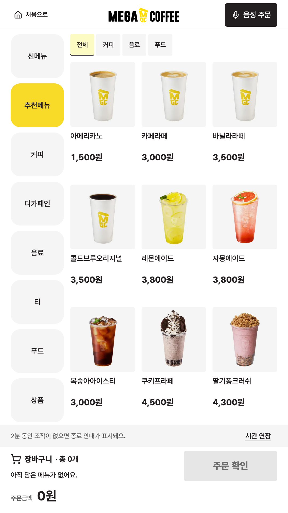
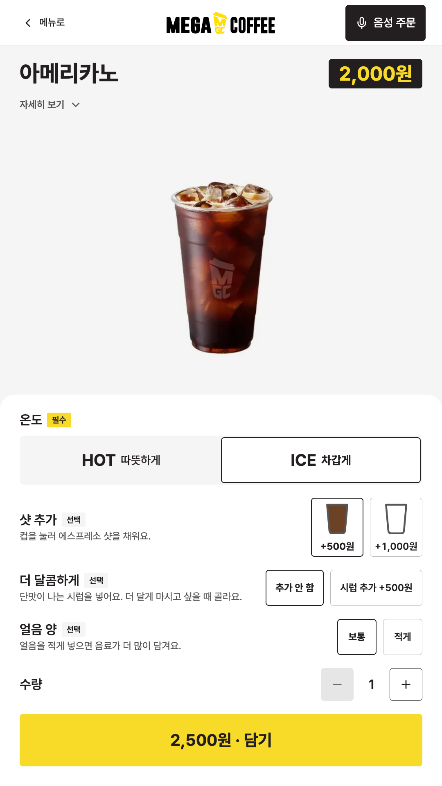
카테고리를 원형으로 보여 주고, “음성으로 주문하기”를 가장 큰 행동으로 둡니다.
3열 카드, HOT·ICE를 한 상품으로 합침, 하위 분류 제공
온도는 필수로 직접 선택. 샷은 컵이 차오르는 모션으로 확인. 담기 버튼에 총액 표시
“자세히 보기”에서 용량·열량·알레르기 확인
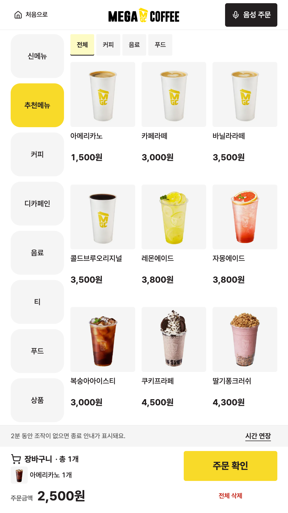
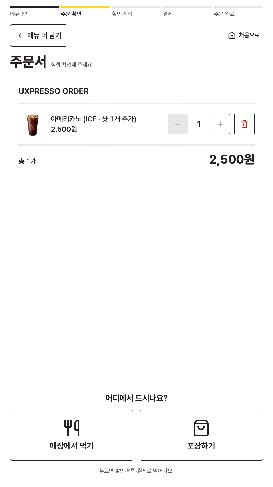
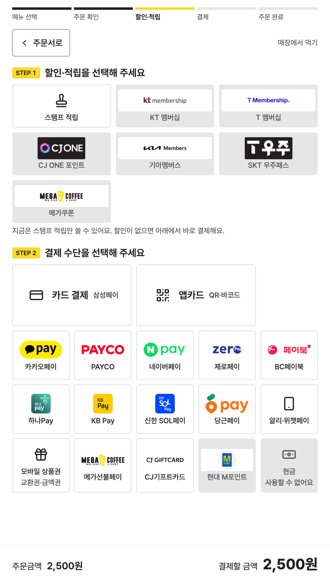
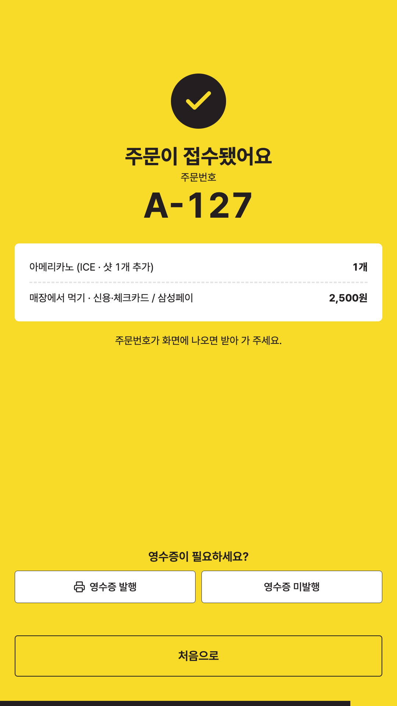
2분 미사용 시에만 안내, 60초 유예, 직접 연장
전체 삭제는 확인 후 실행
결제 수단을 누르면 바로 안내. 실패해도 장바구니 유지, 같은 주문 중복 결제 방지
| 비교 항목 | 기존 화면에서 관찰 | 개선안 | 기대 효과 (가설) |
|---|---|---|---|
| 주문 입력 | 터치 중심 | 터치 + 음성(모의) | 조작·탐색 부담 감소 |
| 메뉴 배열 | 4열, 한 화면 16개 | 3열 큰 카드 | 탐색 성공률 향상 |
| 온도 선택 | ICED 메뉴를 따로 나열 | 한 상품에서 온도 선택 | 탐색 시간 감소 |
| 옵션·금액 | 옵션 뒤 확인 팝업 | 상세 화면에서 총액 확인 | 선택 오류 감소 |
| 수량 수정 | 팝업의 숫자 키패드 | 주문서에서 − / + | 수정 부담 감소 |
| 시간 표시 | “120” 상시 표시 | 안내 + 시간 연장 | 심리적 압박 완화 |
화면 구성의 비교이며, 효과는 아직 측정하지 않았습니다.
도움 요청 감소, 오류 복구 향상, 주문 자신감 향상
직원의 주문 보조 부담 완화 가능성. 신메뉴·콜라보·제휴 노출 유지